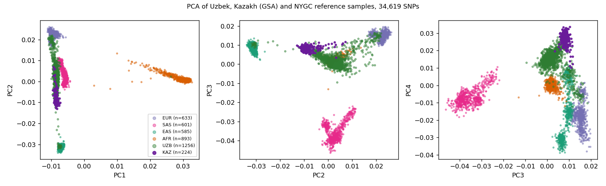
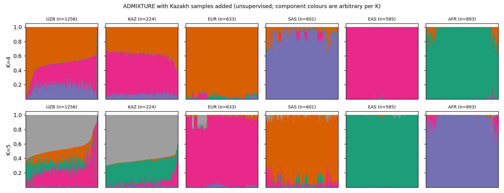

Extended Reference Panels (gnomAD HGDP+1KG & Kazakh GSA)
Beyond 1000 Genomes: Central Asian and global diversity for PCA, ADMIXTURE, and frequency calibration
Kazakh reference added 2026-10-09 DRAGEN Biotech2024Central Asian reference added: Kazakh GSA samples (results 2026-10-09)
1. Data and method
- Kazakh data: 224 per-sample VCFs (Illumina GSA-24v2, called with DRAGEN Array; genome build GRCh37; public, CC BY-NC-ND) downloaded from the EBI EVA FTP to DRAGEN (
.../reference_panels/kazakh_gsa_prjeb89820/vcf_all/, 3.1 GB). Typed genotypes, not imputed. No metadata (region, clan, sex) were used. - Processing: merge of the 224 VCFs, conversion to PLINK, UCSC liftOver GRCh37→GRCh38 (622,863 of 623,053 sites of the first sample lifted), harmonisation of alleles to the existing ADMIXTURE input panel (
adm_in, 64,959 LD-pruned SNPs): 35,039 positions shared, 47 strand-flipped; SNP call rate ≥ 95% (420 SNPs dropped), sample call rate ≥ 95% (no sample dropped), no pair with PI_HAT > 0.2 among the 224. Merge with the 3,968 existing samples gives 4,192 samples and 34,619 SNPs. Scriptkaz_pipeline.sh, toy-tested on 6 and 40 files before the full run. - Analyses (same SNPs for all): PLINK 1.9 PCA, Weir–Cockerham FST for all 15 pairs, ADMIXTURE K=2–7 (5-fold cross-validation, one seed), unsupervised: the Kazakh samples carry no label. Script
kaz_analysis.sh, output.../kazakh_gsa_prjeb89820/merge_full/on DRAGEN. - Consistency check: on this smaller panel (34,619 SNPs) the Uzbek K=4 means are 0.51 EUR-like / 0.31 EAS-like / 0.17 SAS-like, against 0.50 / 0.30 / 0.19 on the full 64,959-SNP run (step 11), and the reference groups remain nearly pure (EUR 0.95, EAS 0.99, SAS 0.88, AFR 0.96).
2. FST, all pairs on the 34,619-SNP merged panel
| Pair | Weighted FST | Mean per-SNP FST |
|---|---|---|
| KAZ vs UZB | 0.0052 | 0.0034 |
| KAZ vs EAS | 0.0237 | 0.0219 |
| KAZ vs SAS | 0.0235 | 0.0164 |
| KAZ vs EUR | 0.0310 | 0.0215 |
| KAZ vs AFR | 0.1298 | 0.0733 |
| UZB vs EAS | 0.0381 | 0.0243 |
| UZB vs SAS | 0.0142 | 0.0100 |
| UZB vs EUR | 0.0142 | 0.0097 |
| UZB vs AFR | 0.1207 | 0.0614 |
| EUR vs SAS | 0.0305 | 0.0208 |
| EAS vs SAS | 0.0546 | 0.0342 |
| EAS vs EUR | 0.0830 | 0.0510 |
| AFR vs SAS | 0.1199 | 0.0616 |
| AFR vs EUR | 0.1322 | 0.0721 |
| AFR vs EAS | 0.1547 | 0.0734 |
The Kazakh samples are nearest to the Uzbek cohort (0.0052) and then to East Asians (0.0237), South Asians (0.0235) and Europeans (0.0310). Values for the other pairs are close to the 82,744-SNP matrix on step 14 (for example UZB–EUR 0.0142, UZB–SAS 0.0142, UZB–EAS 0.0381); a pair involving Kazakhs depends on 224 samples and on a typed rather than an imputed genotype source.
3. PCA

PCA of the merged panel. Uzbek (green) and Kazakh (purple) samples with the NYGC reference groups.
| Group | PC1 | PC2 | PC3 | PC4 |
|---|---|---|---|---|
| UZB | -0.0086 ± 0.0011 | +0.0026 ± 0.0072 | +0.0027 ± 0.0041 | +0.0141 ± 0.0061 |
| KAZ | -0.0085 ± 0.0003 | -0.0081 ± 0.0032 | +0.0082 ± 0.0013 | +0.0266 ± 0.0038 |
| EUR | -0.0094 ± 0.0008 | +0.0224 ± 0.0019 | +0.0150 ± 0.0018 | -0.0171 ± 0.0073 |
| SAS | -0.0061 ± 0.0006 | +0.0029 ± 0.0032 | -0.0352 ± 0.0049 | -0.0065 ± 0.0049 |
| EAS | -0.0070 ± 0.0004 | -0.0314 ± 0.0009 | +0.0085 ± 0.0019 | -0.0157 ± 0.0150 |
| AFR | +0.0294 ± 0.0035 | +0.0013 ± 0.0016 | +0.0017 ± 0.0015 | +0.0005 ± 0.0024 |
On PC2 (the EUR–EAS axis) Kazakhs lie at -0.0081, between the Uzbek mean (+0.0026) and the East Asian mean (-0.0314), with much less spread (SD 0.0032 vs 0.0072). By nearest-reference label (25 neighbours, PC1–PC4) 212 of 224 Kazakh samples fall nearest to the East Asian cluster and 12 to the European one; this label describes position only, not ancestry. PC4 again separates the array-based cohorts from the sequenced references: Kazakh mean +0.0266, Uzbek +0.0141, reference groups -0.0171 to +0.0005. This was seen for the Uzbek cohort on step 8 and had two possible explanations; the Kazakh samples show the same offset in the same direction, which is expected under either explanation (shared Central Asian ancestry, or a difference between array data and sequencing-based reference), so it does not decide between them.
4. ADMIXTURE with Kazakhs included
| K | Cross-validation error |
|---|---|
| 2 | 0.32931 |
| 3 | 0.31905 |
| 4 | 0.31619 |
| 5 | 0.31563 |
| 6 | 0.31539 |
| 7 | 0.31526 |
The error again has no clear minimum: it falls from 0.3293 (K=2) to 0.3162 (K=4) and then changes by less than 0.001 up to K=7.
K=4: mean membership (components named by the reference groups)
| Group | n | EUR-like | EAS-like | SAS-like | AFR-like |
|---|---|---|---|---|---|
| UZB | 1,256 | 0.514 | 0.307 | 0.173 | 0.005 |
| KAZ | 224 | 0.385 | 0.545 | 0.066 | 0.005 |
| EUR | 633 | 0.951 | 0.013 | 0.012 | 0.024 |
| SAS | 601 | 0.080 | 0.027 | 0.879 | 0.014 |
| EAS | 585 | 0.001 | 0.995 | 0.002 | 0.003 |
| AFR | 893 | 0.031 | 0.003 | 0.004 | 0.962 |
Kazakhs are on average 54% EAS-like, 38% EUR-like and 7% SAS-like, with a much narrower spread between individuals than Uzbeks (SD of the EAS-like share 0.06 vs 0.14).
K=5: a component that Uzbeks and Kazakhs share
| Group | EUR-like | EAS-like | SAS-like | AFR-like | Central-Asian-like (new) |
|---|---|---|---|---|---|
| UZB | 0.266 | 0.135 | 0.133 | 0.010 | 0.457 |
| KAZ | 0.059 | 0.295 | 0.010 | 0.014 | 0.622 |
| EUR | 0.937 | 0.003 | 0.016 | 0.016 | 0.027 |
| SAS | 0.067 | 0.029 | 0.878 | 0.010 | 0.016 |
| EAS | 0.000 | 0.994 | 0.002 | 0.002 | 0.003 |
| AFR | 0.030 | 0.003 | 0.004 | 0.961 | 0.003 |

ADMIXTURE K=4 (top) and K=5 (bottom) on the merged panel; Uzbek and Kazakh samples sorted by their largest component. Colours are arbitrary per K.
At K=5 the fifth component is 46% of the average Uzbek and 62% of the average Kazakh genome and at most 3% in any continental reference group. It is probably the same signal as the “Uzbek-specific component” that appeared at K=7 without Kazakhs (step 11). With it, the average Uzbek is 46% Central-Asian-like, 27% EUR-like, 13% SAS-like and 13% EAS-like. The method does not say what this component is. Kazakhs and Uzbeks are themselves mixtures of western and eastern Eurasian sources, so it is best read as “the part of the genome that is common to these two Central Asian populations and not captured by the continental references”, which is what a missing reference group looks like. A technical contribution cannot be excluded (both are GSA-array data, the references are sequencing-based; see PC4).
5. What this changes
- The statement “Uzbeks are about 50% European-like, 30% East Asian-like and 19% South Asian-like” remains a correct description relative to the four continental references and is reproduced on this panel, but it should not be quoted as ancestral proportions: a Central Asian reference group absorbs about half of the genome at K=5.
- “Closest to SAS or to EUR” (steps 9 and 14) is superseded as a headline: the closest group in this panel is Kazakh, by a factor of about 3 in FST.
- The open item “add Central Asian reference populations” is partly closed: one Central Asian group (Kazakh, 224) is now in; HGDP Central Asian populations from the gnomAD HGDP+1KG release (second section below) have not been added.
6. Limitations
- One Kazakh data set, 224 samples, regional and clan composition unknown; one ADMIXTURE seed per K (the other panel used two seeds that agreed to 1e-5).
- Typed (Kazakh) versus imputed (Uzbek) genotypes, GSA-24v2 versus GSA-24v3, GRCh37 liftover: all can shift allele frequencies slightly; the analysis uses only SNPs shared by all three sources and 95% call rate.
- The panel has 34,619 SNPs (54% of the 64,959 pruned panel), which is enough for continental structure and the Kazakh/Uzbek separation shown but gives less resolution than the full panel.
- Unsupervised ADMIXTURE and PCA describe shared structure; they do not date admixture or identify source populations.
7. Files
DRAGEN: /staging/ALSU-analysis/admixture_analysis/reference_panels/kazakh_gsa_prjeb89820/merge_full/ (panel_kaz.*, pca_kaz.*, fst_pairs.tsv, panel_kaz.[2-7].Q, adm_K*.log); scripts kaz_pipeline.sh, kaz_analysis.sh in scripts/nygc_site_2026-10-04/. Data source: EVA PRJEB89820 (Kazakh GSA genotypes; licence CC BY-NC-ND, used here for analysis only, not redistributed).
ARCHIVED status notes of 2026-09-07/20 (gnomAD HGDP+1KG chr22 pilot that extracted 0 variants, Kazakh sample_1 pilot, merge targets); kept for the record
1. Why this branch
Current global comparisons use 1000 Genomes Phase 3 (2,548 samples). To place Uzbeks relative to HGDP diversity, South/Central Asian WGS, and a Kazakh GSA chip-matched neighbour cohort, we are adding gnomAD v3.1.2 HGDP+1KG joint callset and PRJEB89820 Kazakh genotypes. This complements the clinical-frequency work in the Variant Frequency Explorer (179-variant ClinVar Pathogenic/LP panel).
2. gnomAD v3.1.2 HGDP + 1000 Genomes
chr{N}.vcf.bgz is ~50–60 GB.
Extract only sites overlapping UZB/KG arrays via bcftools view -T + remote tabix index.
hgdp_tgp.chr22.subset.vcf.gz contains 0 variants despite the 122,242-site
union request — the site count above was the input request, not a result. Most likely cause: a
contig-naming mismatch between the gnomAD file's contigs and the UZB/KG site list (e.g.
chr22 vs 22) that made every bcftools view -T region lookup miss.
Not yet root-caused or re-run. The 56 GB orphan full-chromosome download has been deleted
(confirmed safe, freed /staging space).
| Item | Value |
|---|---|
| DRAGEN root | /staging/ALSU-analysis/admixture_analysis/reference_panels/hgdp_tgp_v3.1.2/ |
| URL | …/gnomad.genomes.v3.1.2.hgdp_tgp.chr{N}.vcf.bgz (GCS public) |
| Chr22 pilot script | scripts/pilot_merge_chr22_subset.sh |
| Pilot status | FAILED (silently) — 0 variants extracted; needs contig-naming fix and re-run |
| Cleanup | DONE — orphan 56 GB file deleted 2026-09-20 |
3. Kazakh GSA — PRJEB89820
| Item | Value |
|---|---|
| Access | EVA FTP (CC BY-NC-ND) |
| DRAGEN root | /staging/ALSU-analysis/admixture_analysis/reference_panels/kazakh_gsa_prjeb89820/ |
| Assay | Illumina GSA MG v2 (same class as UZB GSA-24 v3.0) |
Pilot sample_1 | DONE — 623,053 autosomal biallelic SNPs |
| UZB HQ overlap | 4,930 SNPs (IDs harmonized to chr:pos:ref:alt) |
| PLINK2 notes | --chr 1-22 --max-alleles 2 --new-id-max-allele-len 127 missing |
4. ALSU merge targets (existing)
| Dataset | Path on DRAGEN | N |
|---|---|---|
| UZB HQ | …/spring2026/post_imputation/UZB_imputed_HQ_clean | 1,090 |
| 1000G common | …/spring2026/global_pca/KG_common | 2,548 |
| UZB+1KG merged | …/spring2026/global_pca/UZB_1kG_merged | 3,595 |
| Global admixture v2 | …/admixture_analysis/global_admixture_v2/global_for_admixture_fixed_v2 | 3,595 × 54,718 SNPs |
5. Next steps
- Finish chr22 gnomAD subset pilot → overlap counts vs UZB and KG
- If OK:
extract_hgdp_tgp_subset.shfor chr 1–22 (site-list extraction only) - Batch 224 Kazakh VCFs → PLINK → merge with UZB
- LD-prune extended panel; rerun global PCA / ADMIXTURE with HGDP+1KG anchors
- Optional: add Kazakh + extended refs to Variant Frequency Explorer comparisons
scripts/reference_panels/SESSION_STATE.md and
LOG.md in the local ALSU repo (C:\work\alsu).
Verified on DRAGEN (Biotech2024) 2026-09-07. Scripts:
scripts/reference_panels/ in ALSU-analysis repo.
Local mirror: C:\work\alsu\scripts\reference_panels\.